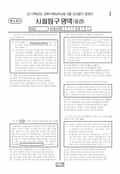

문제지


시험지를 먼저 풀어 보세요. 등급컷·표준점수·난이도는 흐리게 가려 뒀어요.
정답 변경 없음
이의신청 1문항 · 평가원 상세 답변 1문항
이의 요지
이의 신청자의 경우 <보기>의 “ㄱ. 민주주의 국가는 권위주의 국가보다 정치체제의 붕괴가능성이 낮다
평가원 답변
본 문항은 민주주의와 권위주의 체제의 붕괴가능성과 1인당 국민소득간의 관계를 나타내는 그래프를 보고 그 경향성을 파악하는 문제입니다. 이의 신청자의 경우 <보기>의 “ㄱ. 민주주의 국가는 권위주의 국가보다 정치체제의 붕괴가능성이 낮다.”도 맞는 진술이라고 주장하고 있으나 이는 그래프에 대한 잘못된 해석입니다. 이 그래프에서는 특정 소득 구간 내에서 정치체제의 붕괴가능성을 제시하고 있습니다. 따라서 두 정치체제 간 붕괴가능성 비교는 특정 소득 구간에서는 가능하나 전체적인 경향성 비교는 불가능하다고 할 수 있습니다. 이의 신청자가 계산한 방식으로 두 정치체제 간 붕괴가능성에 대한 전체적인 경향성에 대한 결론을 내리는 것이 가능하려면 소득 구간 별로 두 정치체제에 해당하는 국가의 수(數)를 알고 있어야 합니다. 따라서 <보기>의 ㄱ은 그래프에 대한 올바른 해석이 아니며, 이 문항은 오류가 없습니다.- 18 -
발행 기관: 한국교육과정평가원(KICE). 파일 위치: 이 사이트가 보관한 사본. 저작권은 발행 기관에 있습니다. 원본과 다르거나 게시 중단이 필요하면 연락처로 알려 주세요. 등급컷 출처 구분은 데이터 원칙에서 설명합니다.
지난 회차의 등급컷·표준점수·난이도는 흐리게 가려 뒀어요.
막대 색은 역대 대비 난이도 · 진한 막대가 이 시험 · 막대를 누르면 그 회차로 이동
| 회차 | 1등급컷 | 표점 최고 | 1등급 표점 | 난이도 |
|---|---|---|---|---|
| 9모2010학년도이 시험 | — | — | — | — |
| 수능2009학년도 | 42 | — | 69 | 어려움 |
| 수능2007학년도 | 39 | — | 68 | 쉬움 |